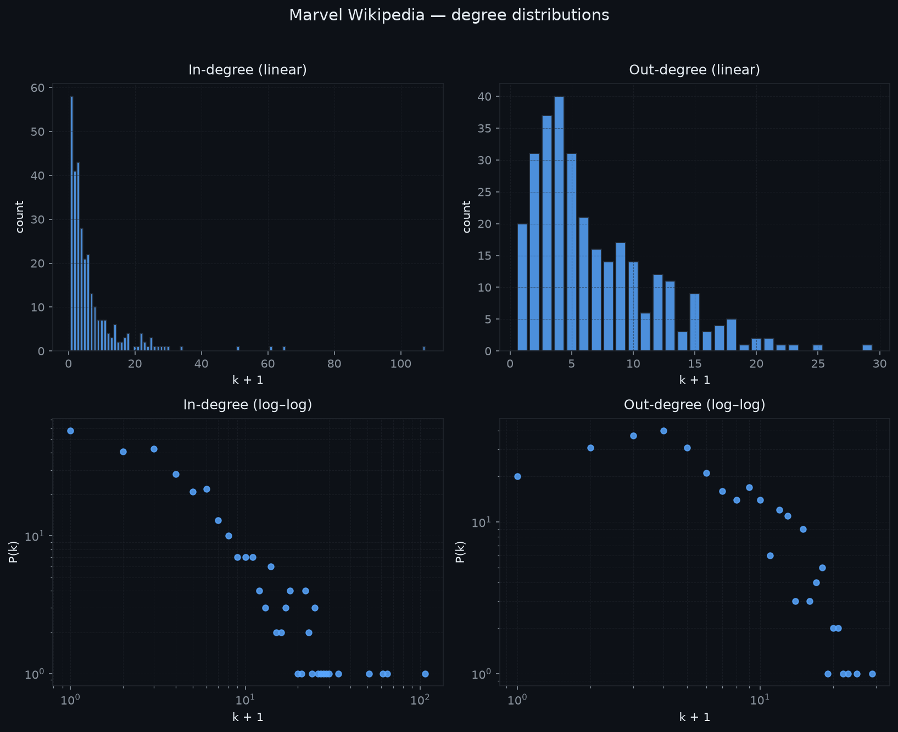
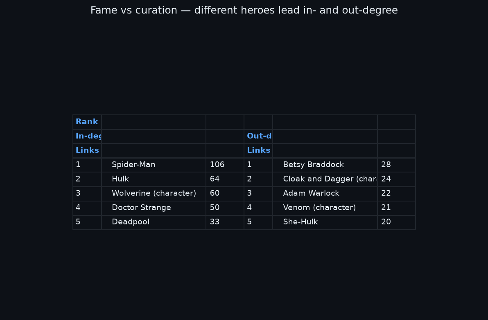
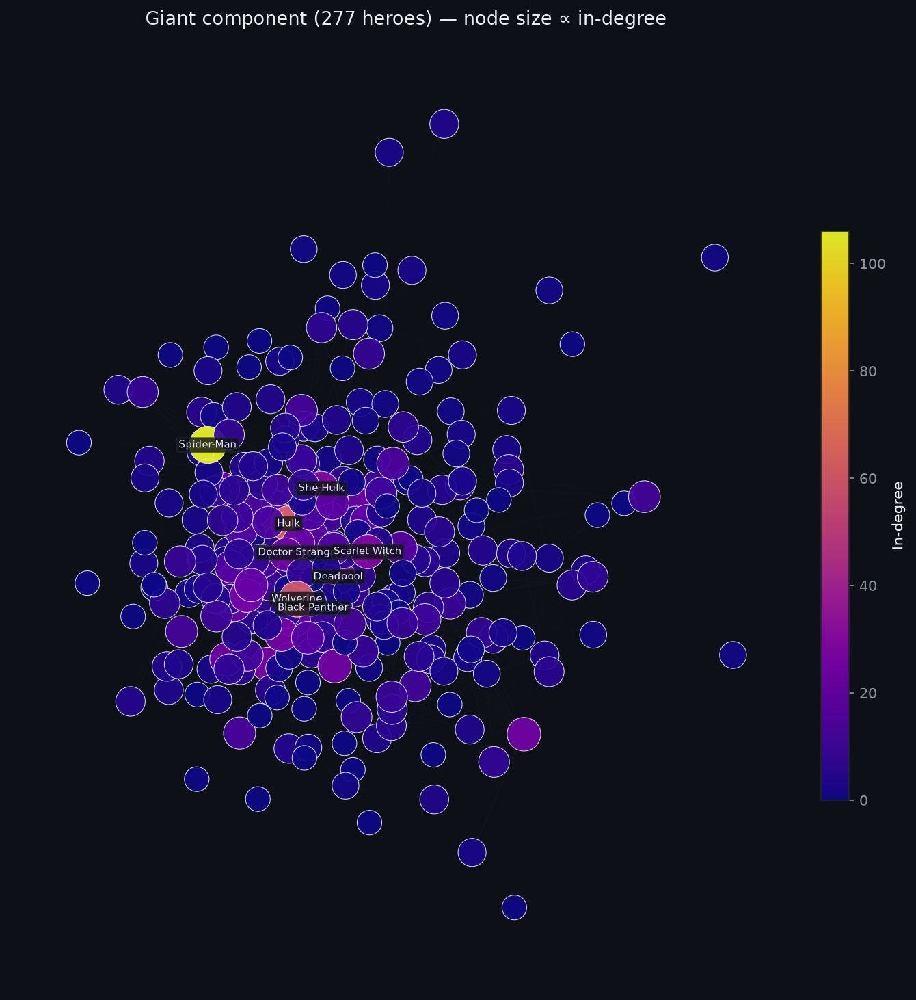

What we asked
Who is famous in the Marvel Wikipedia network, and who is a curator? In-degree counts how many other hero pages link to you — fame conferred by others. Out-degree counts how many links you write — editorial work on your own page. Are those the same people? And where are the disconnected islands — the heroes nobody links to, and the clusters outside the giant component?
What we did
We loaded the week-1 frozen snapshot from the course data page, adding all 303 nodes
before the 1,784 directed edges so the 17 isolates would not vanish.
Then we computed in- and out-degree distributions (linear and log–log, with the course's
k+1 shift so zero-degree heroes survive the log axis), identified hub leaders,
mapped weakly connected components, and drew the giant component with a force-directed layout.

Hub leaders — fame ≠ curation
The leaderboard for in-degree and out-degree barely overlaps. Spider-Man sits at 106 incoming links — linked by over a third of the active network. Betsy Braddock leads out-degree at 28, writing the most links on her own page. Different mechanisms, different heroes.
| Top in-degree (famous) | Top out-degree (curators) | ||
|---|---|---|---|
| Hero | Links in | Hero | Links out |
| Spider-Man | 106 | Betsy Braddock | 28 |
| Hulk | 64 | Cloak and Dagger | 24 |
| Wolverine | 60 | Adam Warlock | 22 |
| Doctor Strange | 50 | Venom | 21 |
| Deadpool | 33 | She-Hulk | 20 |


What surprised us
- Two different stories in one network. In-degree on log–log axes stretches all the way to Spider-Man at 106; the out-degree tail dies almost four times earlier. Incoming links are conferred by everyone else's editors; outgoing links require someone to sit down and write them — and that has a ceiling.
- 17 heroes are completely invisible. Zero links in either direction. They exist in the category roster but not in the link graph — worth asking why their Wikipedia pages mention no fellow superheroes (and no one mentions them).
- Almost everyone is in one blob. 277 of 303 heroes sit in a single giant weakly connected component. The rest is one 9-node island plus isolates — not a scattered archipelago, but one supercontinent and a few specks of dust.
- Collapsing to undirected hides the story. Directed edges: 1,784. Undirected pairs: 1,434, average degree ≈ 9.5. The directed view matters here — mixing in- and out-degree into one number would blur the fame-vs-curation split.
Analysis code: analysis/week1_explore.py in our
repo.